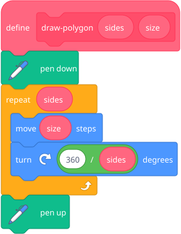
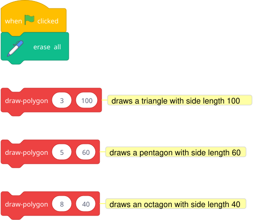
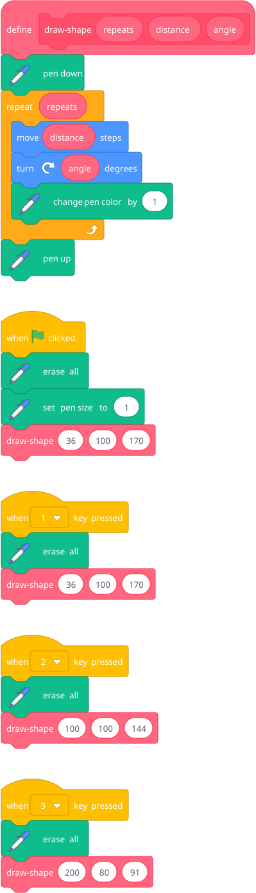
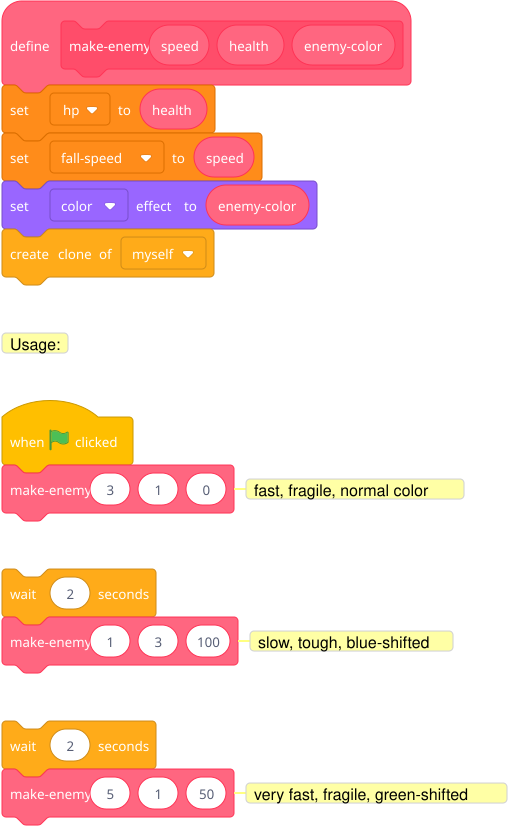

Custom blocks can take parameters. Now one block can draw a triangle, square, pentagon — anything.
Go to "My Blocks" → "Make a Block" → type "draw-polygon" → click "Add an input" → name it "sides" → "Add an input" again → name it "size" → OK.

Now he can call it:

Blocks to point out: The inputs (sides, size) are oval-shaped — they're like variables, but they only exist inside the define block. When you call draw-polygon (5) (60), the sides oval becomes 5 and size becomes 60 for that call. Next time you call it with different numbers, it draws something different.
Rewrite the spirograph using custom blocks:

Same spirograph machine from Unit 2, but now the code is clean and the pattern is reusable. One block, three parameters, infinite designs.
Build a custom make-enemy (speed) (health) (color) block for the space game and use it to create different enemy types cleanly.
Hint — blocks he'll need:

The make-enemy block sets up the properties before creating the clone. The clone inherits whatever the sprite's variables were at the moment it was cloned. This is a slick pattern — the custom block becomes a factory with knobs.
Note: This only works if hp, fall-speed, etc. are "For this sprite only" variables (see Unit 6). Otherwise all clones share the same values and the last make-enemy call wins.